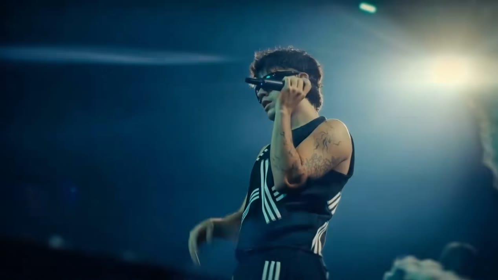

De Monterrey a Houston
Nació en Monterrey, Nuevo León, y de niño se mudó con su familia a Houston, Texas. A los 13 años empezó a grabar su propia música, inspirado por productores como Skrillex, Swedish House Mafia y Avicii.
Rodrigo Torres de la Garza · Monterrey, 1998

Nació en Monterrey, Nuevo León, y de niño se mudó con su familia a Houston, Texas. A los 13 años empezó a grabar su propia música, inspirado por productores como Skrillex, Swedish House Mafia y Avicii.
Su usuario de Instagram era "nsqkpapi" y un amigo, medio en broma, le dijo que lo usara como nombre artístico. Se pronuncia "Nesquik".
Debutó en 2020 con el EP Botánica, bajo Honey Records. En 2022 llegó Roy, su primer álbum de estudio, que lo llevó a festivales como Ceremonia (2023) y Lollapalooza Chile (2024).
En 2024 lanzó el mixtape ATP. Billboard lo incluyó entre los mejores álbumes de artistas latinos emergentes del año y Rolling Stone lo puso en el lugar 82 de los 100 mejores álbumes de 2024. Ese año también coescribió "Mami 100pre Sabe" con Álvaro Díaz.
El 15 de octubre de 2026 estrenó mosca, un disco más cercano al rock alternativo. Lo presentó con una listening party gratuita en la Macroplaza de Monterrey, a la que asistieron alrededor de 40 mil personas.
| Año | Momento |
|---|---|
| 1998 | Nace en Monterrey |
| 2020 | EP Botánica |
| 2022 | Álbum Roy |
| 2024 | Mixtape ATP y Lollapalooza Chile |
| 2026 | Álbum mosca |
| 2027 | Estadio GNP Seguros, 23 de enero |